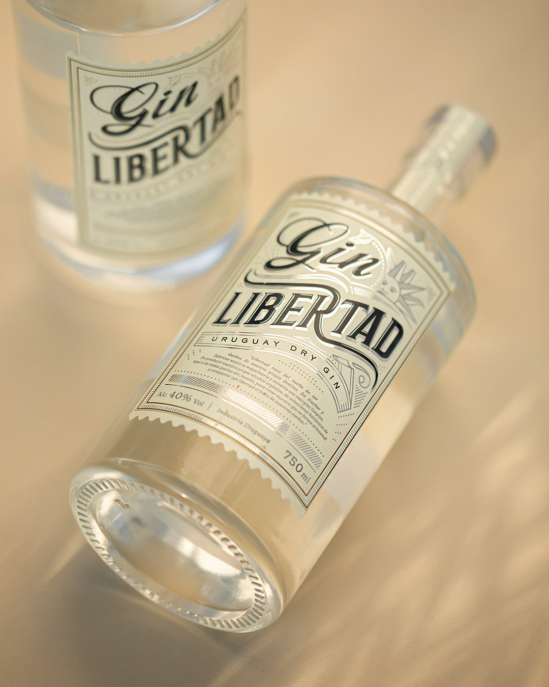
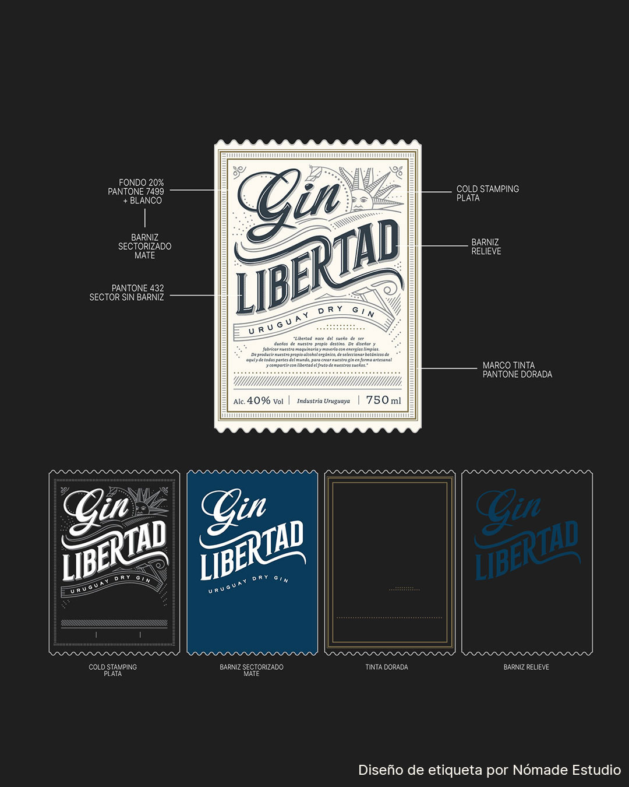
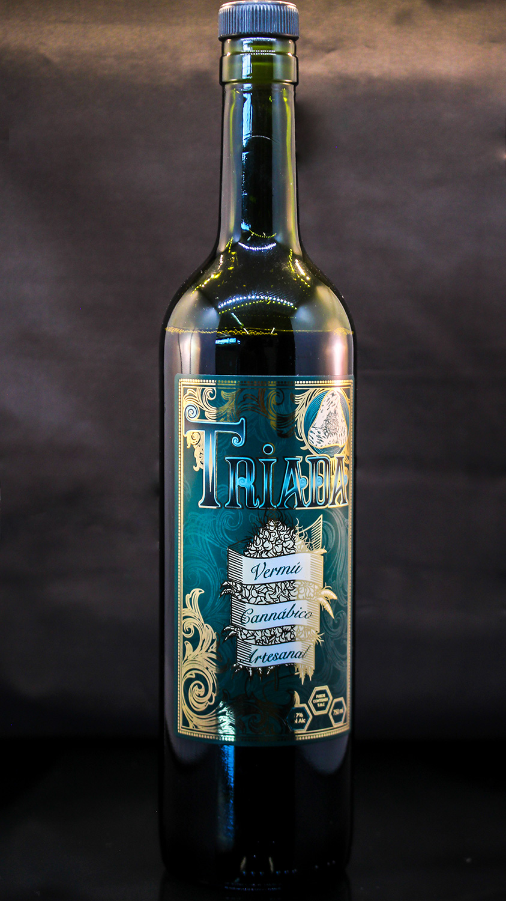
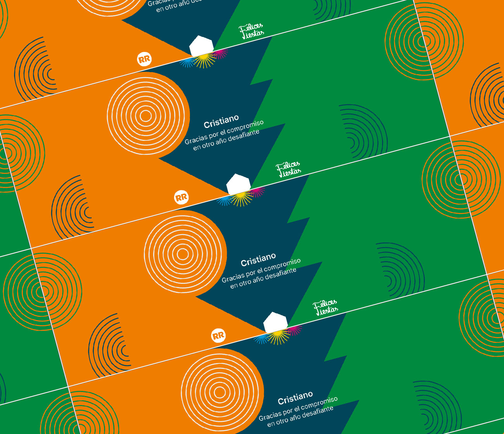
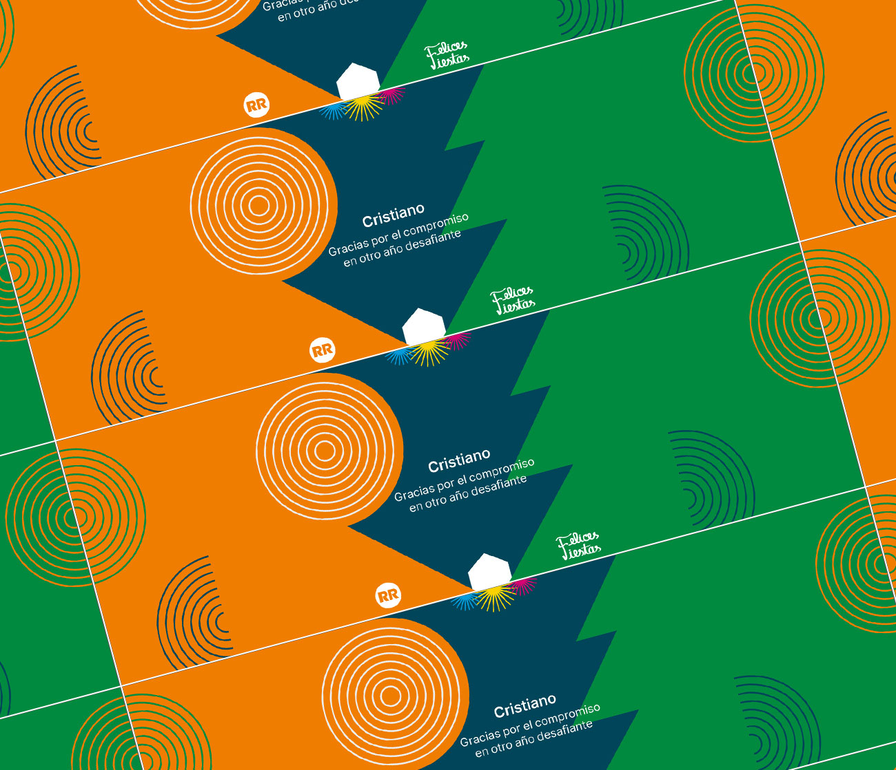
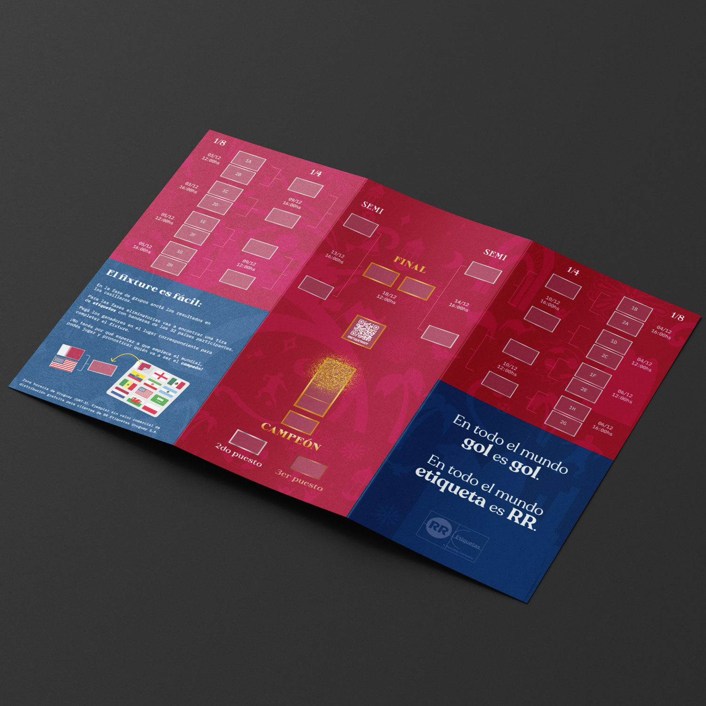
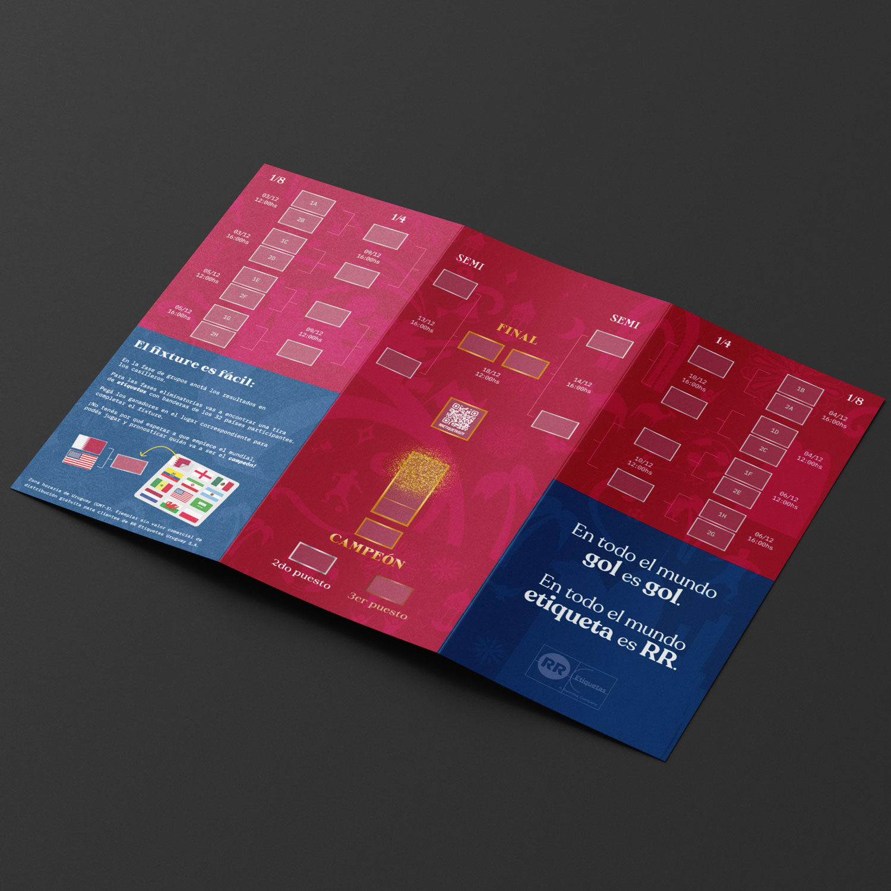

RR Etiquetas

RR es una imprenta de etiquetas con una enorme cantidad de clientes. Allí formamos un equipo de diseño increíble con Cristian Recoba y el sensei Daniel Gandolfo. Tomamos iniciativa en desarrollar nuevos canales en los que pueda expandirse un negocio como es la imprenta industrial y comercial. Siempre partiendo del arte de la impresión, de lo que implica en cuanto trabajo manual, de sus procesos de trabajo en cadena y la responsabilidad de cada eslabón.
A pesar de la rigidez comercial que suelen tener las industrias tradicionales en Uruguay, nos desenvolvimos con la mayor libertad creativa que pudimos obtener. Siempre tensando la cuerda entre las relaciones comerciales y el trabajo de diseño, conseguimos resultados muchas veces satisfactorios, pero sobre todo logramos darle un poco de color a la monotonía rutinaria del trabajo en la fábrica.
Diseño de imagen en instagram


Diseño gráfico para producción y pre-prensa en flexografía
Etiquetas, marcas y productos para clientes con estrictos controles de calidad. Utilizamos diversos materiales y terminaciones para las etiquetas. Desde cold stamping hasta tintas especiales, barnices y troquelados personalizados.
  


Diseño de producto
Regalo empresarial que consta de una caja con 2 cervezas artesanales. Se diseñaron las etiquetas de las cervezas y el diseño de la caja bajo el concepto de enviar deseos de tranquilidad y proyección al futuro, ya que terminaba el primer año de pandemia y se trabajaba en incertidumbre constante.
Las ilustraciones en las etiquetas muestran paisajes de Piriápolis y la Sierra de Minas mediante una selección de colores cálida que busca transmitir esa sensación de calma, siendo además, lugares paradigmáticos de nuestro país para quien busca relajarse.

 

Diseño de producto publicitario, fixture del mundial.
¿Como sería un fixture hecho por una imprenta de etiquetas? Siguiendo la tradición de las imprentas en Uruguay diseñamos un producto interactivo, entre álbum de figuritas y fixture, para celebrar una nueva copa del mundo. El producto es un políptico de doble cara que incluye una hoja de stickers con las banderas de los países participantes con el objetivo de que se utilicen para completar los resultados del campeonato.
 

Fotografía institucional y de producto
Tomamos fotografías para tener material que nos permita desarrollar la imagen de la empresa. La mayoría de estas son utilizadas en el sitio web de RR y en videos institucionales.


Publicidad de página completa para revista impresa del rubro carne y alimentos